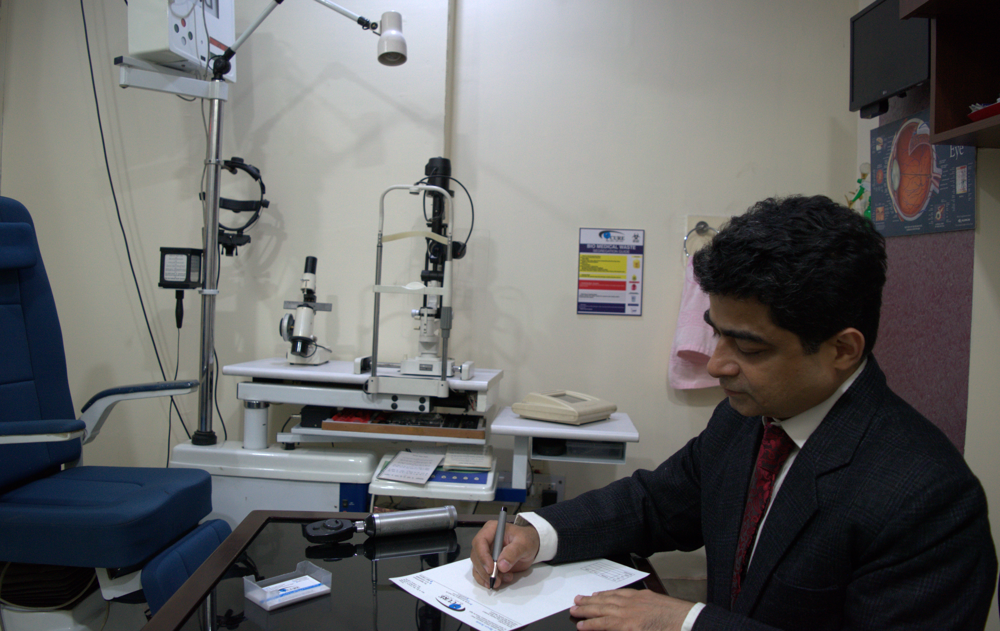

ICURE Eye Care Centre
Call +91 875 0045 258 or click here to book an appointment
iCure Eye Care Centre offers expert eye doctors assisted by advanced eye equipment incorporating cutting edge technology to cure various eye ailments like cataract, glaucoma, uveitis, spectacle removal and retinopathies. The clinic is headed by Dr Tarun Arora, who has performed over 20,000 eye surgeries in his vast experience of more than 20 years in the field of ophthalmology, working in reputed eye hospitals in Delhi like Sir Gangaram Hospital, BLK Hospital, Centre for Sight, and Batra Hospital.
Services offered
The centre offers the following specialities